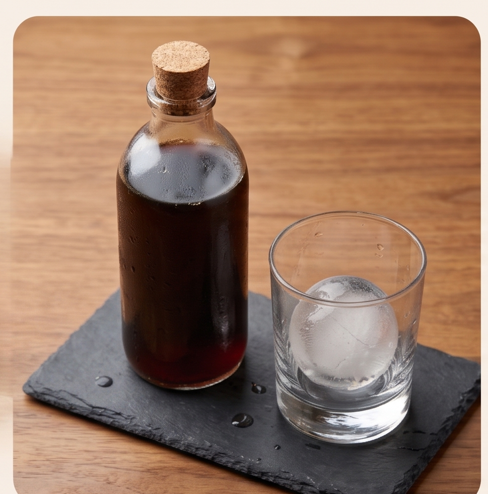
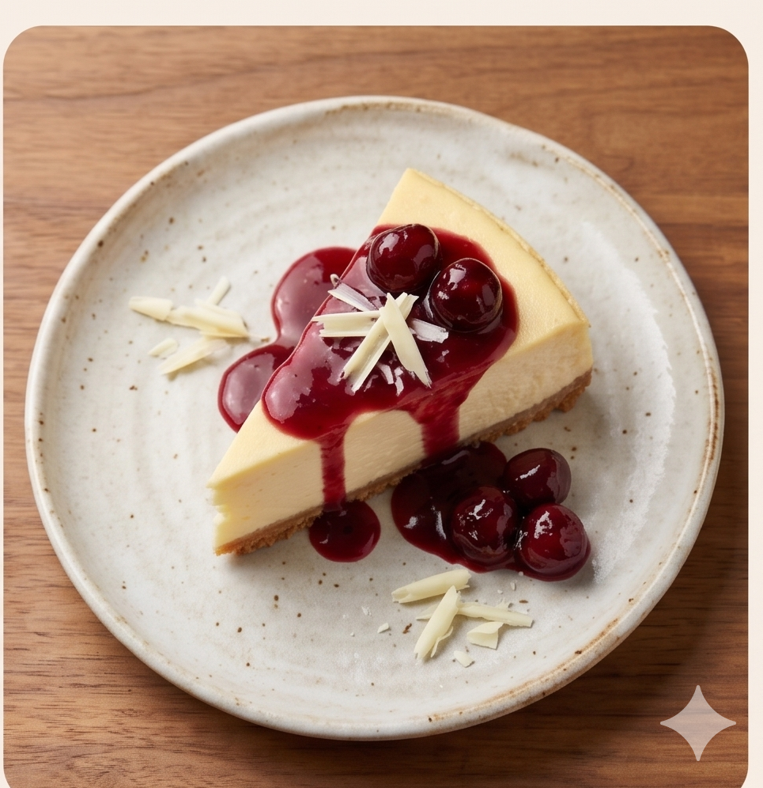
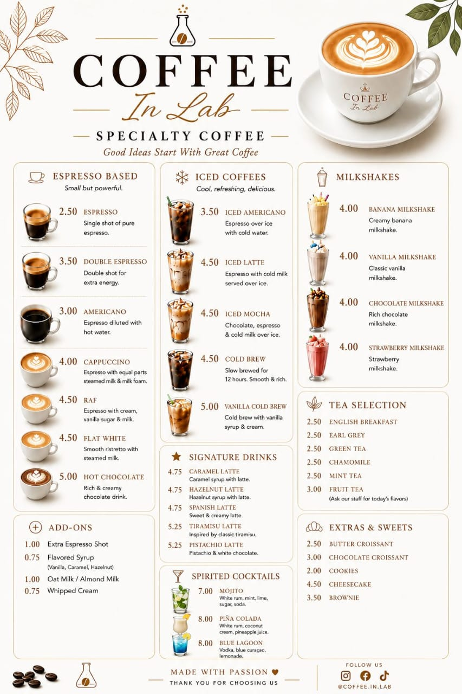

Cold Brew
12 saat dəmlənmiş
4.50 ₼
Azərbaycan kafeləri üçün QR menyu platforması
Çap xərci yox. Ani yeniləmə. Müştəri bir skan ilə menyunu görür.


50+ kafe istifadə edir
Sadə proses
Menyunu dəyişəndə çapı gözləmirsiniz. Platformada yeniləyin, QR eyni qalır.
Kateqoriyalarınızı, məhsulları, qiymətləri və şəkilləri əlavə edin.
Hər masa üçün fərqli QR kod yaradın və PDF kimi endirin.
Müştərilər skan edir, menyunu telefonda açır və rahat seçim edir.
İdarəetmə paneli
Qiymət, şəkil və məhsul məlumatı dəyişən kimi menyuda görünür.
Sadəcə baxış menyusu kimi işlədin, əlavə əməliyyat yükü yaratmayın.
AZ, EN, RU və TR dillərində menyu ilə turistlərə daha rahat xidmət edin.
Skan saylarını və populyar məhsulları izləyərək menyunu optimallaşdırın.
Komandanız menyunu texniki bilik olmadan paneldən yeniləyə bilər.
QR ilə açılan menyu hər telefonda sürətli və oxunaqlı görünür.
Canlı nümunə
MenyuQR ilə hazırlanmış real kafe nümunəsi: kateqoriyalar, şəkilli məhsullar və mobil oxunaqlı kartlar.

Specialty coffee menyusu, desertlər və soyuq içkilər üçün mobil QR təcrübəsi.
Menyuya baxQiymətlər
Yeni başlayan kafelər üçün
Aktiv kafe və restoranlar üçün
Çox filiallı bizneslər üçün
Müştəri rəyləri
“Menyunu hər həftə yeniləyirik və artıq çapla vaxt itirmirik. Müştərilər QR ilə çox rahat baxır.”
“Yeni içkiləri paneldən əlavə etmək bir neçə dəqiqə çəkir. Menyu həmişə aktual qalır.”
Sürətli başlanğıc
Demo üçün əlaqə saxlayın, menyunuzu birlikdə QR formata keçirək.